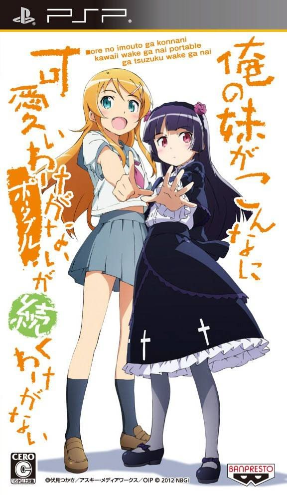
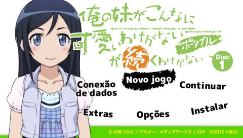
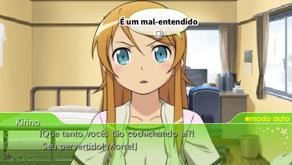
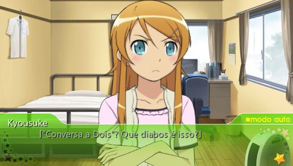
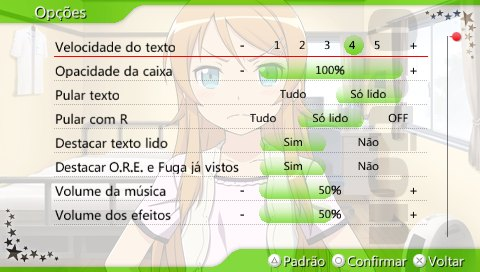
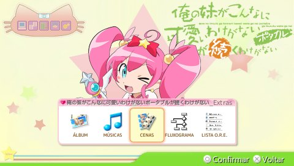
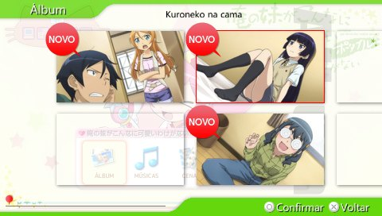

DISCO 1
Em português brasileiro, com as vozes originais em japonês.
BAIXARVisual novel de PSP · Tradução de fãs
Ore no Imouto ga Konna ni Kawaii Wake ga Nai Portable ga Tsuzuku Wake ga Nai, em uma tradução brasileira feita direto do japonês, com as vozes originais.

Kyousuke Kousaka é um estudante comum que mal fala com a irmã mais nova, Kirino: bonita, popular e impecável na escola. Até descobrir que ela guarda um segredo que ninguém poderia imaginar. A partir daí, ele vira o conselheiro relutante da vida dupla da irmã.
Nesta visual novel para PSP, a história ganha rotas próprias para personagens como Kirino, Kuroneko, Saori, Manami e Ayase, além de cenários extras do tipo "e se", cheios de humor e referências à cultura otaku.
A Conversa a Dois é um dos destaques: os personagens falam sozinhos e você escolhe a hora de responder, apertando o botão na janela certa.
Capturas reais da tradução rodando no PPSSPP.






Em português brasileiro, com as vozes originais em japonês.
BAIXARAinda não disponível. A tradução não foi iniciada.
Baixe a ISO do Disco 1.
Abra o PPSSPP.
Selecione a ISO baixada e comece a jogar.
Sim. O Disco 1 está disponível em português brasileiro. Baixe a ISO e abra no PPSSPP.
O Disco 1 já está disponível. A tradução do Disco 2 ainda não foi iniciada e não tem previsão de lançamento.
Não. As ferramentas do repositório são só para quem desenvolve.
Não sabemos, porque isso ainda não foi testado.
Não. Esta é uma tradução nova, feita a partir do japonês. Outras traduções serviram só como referência de comparação.
Não. É um projeto independente de fãs, sem fins comerciais e sem vínculo com os titulares da obra.
Projeto independente de fãs, sem fins comerciais e sem vínculo com os titulares da obra. © Tsukasa Fushimi / ASCII Media Works / OIP, ©2012 NBGI. Todos os nomes, marcas, textos, imagens, músicas, vozes e vídeos pertencem aos seus titulares.